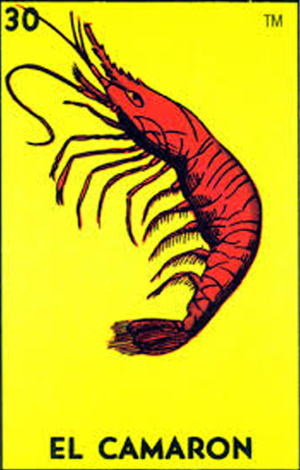
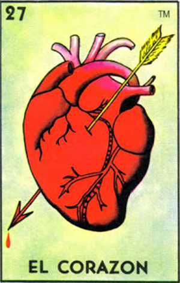
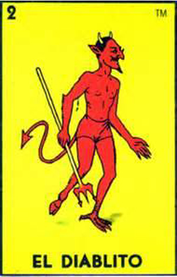
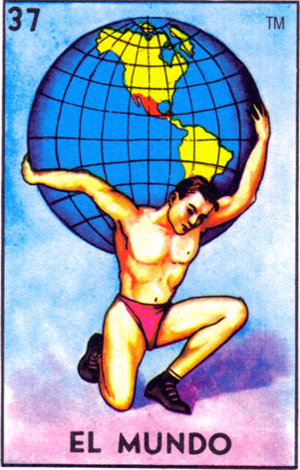
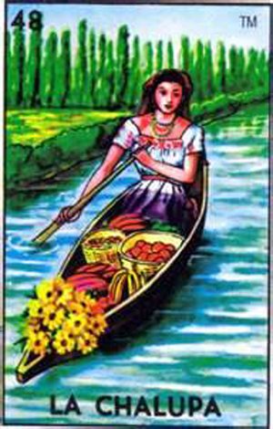
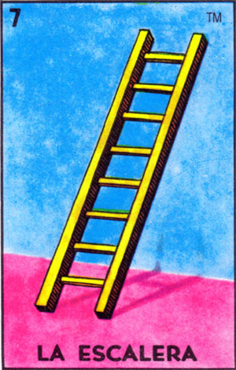
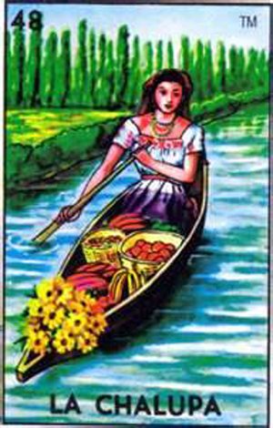
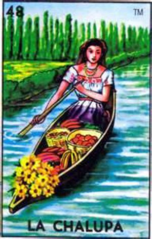

LaboratoriaMexico

In 2010 Mexican gastronomy was recognized as Intangible Cultural Heritage of Humanity.

Mexico is considered one of the five most friendly countries with foreigners.


It is the 1st tourist destination in Latin America and the tenth most visited in the world.
Between 10% and 12% of all species in the world can be found in our territory. More than 37,266 archeological sites have been registered.

Around 287 languages are spoken in Mexico, and is the seventh country with the greatest linguistic diversity in the world:
the state recognizes Spanish as a national language along with 67 native languages of the nationWe are the people who work the most hours worldwide with an average of 2,246 hours a year,
this is twice the working hours of countries like Germany where 1,371 hours is the average.

Internet coverage increased by 5% from 2014 to date.×
 
Around 287 languages are spoken in Mexico, and is the seventh country with the greatest linguistic diversity in the world:
the state recognizes Spanish as a national language along with 67 native languages of the nation

Around 287 languages are spoken in Mexico, and is the seventh country with the greatest linguistic diversity in the world:
the state recognizes Spanish as a national language along with 67 native languages of the nation